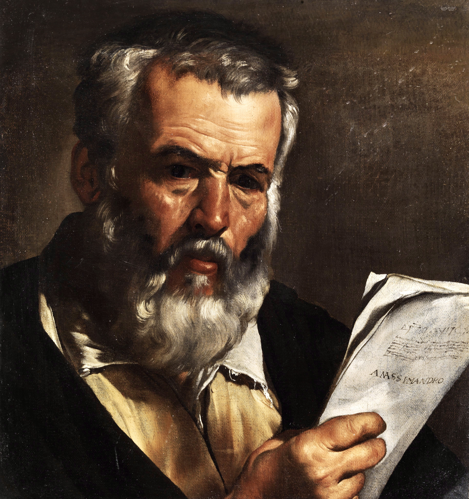
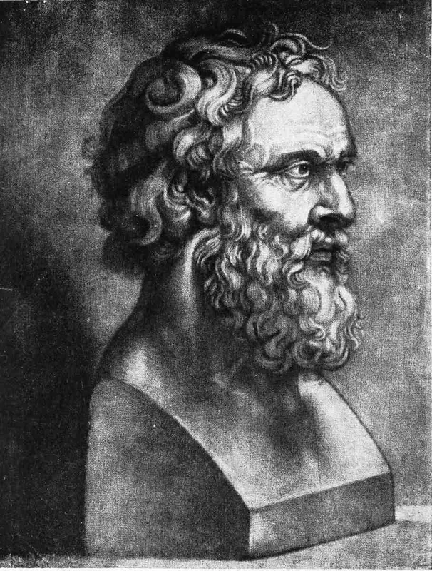
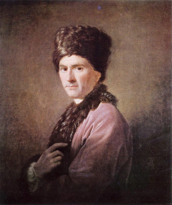
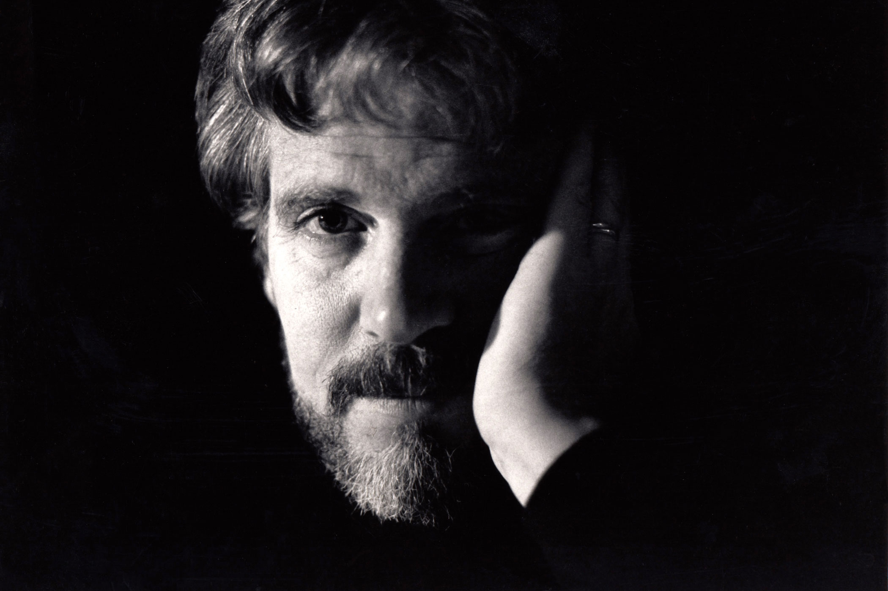
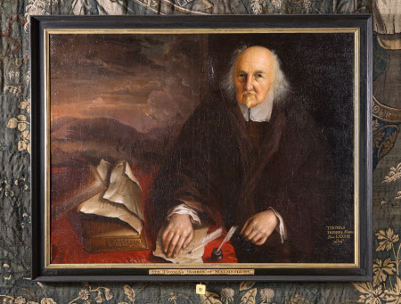
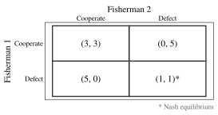

Published March 19, 2026

Two weeks ago, I was offered the words fish and chips at my philosophy residency outside Reference Point, and in return the kind fella bought me something from the fish and chip shop.
The philosopher Michael Sandel once said "you can't go wrong with fish and chips" but didn't elaborate any further on that. So I'll have a stab of my own at asking what a philosopher might think about the beloved national dish.
Anaximander (c. 610–546 BC) was a pioneering Milesian philosopher, often called the 'Father of Cosmology,' who challened the original flat-Earther Thales with his theory that the Earth has a cylindrical shape.

What would Anaximander have made of fish and chips? It's possible he would have felt a strange face-to-face confrontation with our human origins. This is because he had speculated that human beings emerged from aquatic life, predating evolutionary theories by centuries. So while fish and chips are comfort food for many, to Anaximander the dish is a reminder of our specific biological contingency. And in this lies something almost unsettling. The eater and the eaten are not wholly separate categories, but stages in a long natural history.
That thought didn't phase me much while tucking in with my wooden fork, but the taste of the dish in my home city of London made me appreciate the differences in taste in those I'd eaten while on tour recently with my band in places like Glasgow and Dublin. Yet crucially, wherever you go it's still recognisably fish and chips. In Plato's terminology, every takeaway from a chippy you've had participated in a form.

What Plato meant by a 'form' was the ideal, perfect, abstract concept of fish and chips. Each portion you come across approximates it to some degree, but nowhere does it exist as a perfect replica of the form. The slightly-too-soggy fish and chips today, the overcooked batter tomorrow – these are not failures to be fish and chips, but failures to perfectly instantiate the Form. So to recognise fish and chips at all is already to graph a concept beyond the plate. For Plato, to engage in eating fish and chips is already to access abstract structures not derived solely from sensory experience.
So the fish grants us access to abstract ideas, yet the fish cannot itself grasp abstract ideals. The fish is not a thinking subject, and for René Descartes this is what distinguishes human life from the animals.
Whereas humans have bodies which are subject to cause and effect (the mechanical processes of chewing the fish and digesting the chips), we also have a thinking mind which can stand outside this causal, physical world. Descartes thought fish, like potatoes, lack this thinking component, merely exhibiting mechanical responses without any corresponding inner experience. I will return to this later because this assumption has since been overturned in numerous ways, most famously with scientific evidence that fish do have an inner experience, but also by denying that human beings themselves have an inner experience!
But what is the inner experience of eating fish and chips? We'd all recognise the qualities of crispness, salitness and warmth. But are these qualities 'in' the meal, or do they merely arise in the interaction between object and perceiver?
John Locke would have distinguished between the primary and secondary qualities of fish and chips. He would have argued shape and size belong to the food, while taste and smell depend on the perceiver. So in a strange sense, the dish is partly subjective. We are not merely passive receivers of the qualities inside the dish, and this explains why its appeal varies depending on who eats it.
If appeal varies among people, then not everyone's going to be convinced with Sandel that "you can't go wrong with fish and chips." Is it possible to persuade someone to enjoy the dish who didn't already? Could we compare secondary qualities in the way we can compare primary qualities like size and shapes?

David Hume had a complex response. He agreed with Locke that taste was not a primary quality. Therefore you couldn't find an objective standard of better or worse in the object itself. But he found a standard grounded in qualified observers of the object. Those who had eaten widely, paid attention, and reflected carefully could be a better judge of fish and chips than someone indifferent or inexperienced. What he thought this acheived was normativity without objectivity. And it allows Hume to derive a modification on Sandel's principle: "you can go wrong with your judgments about fish and chips."
This leads us to consider whether Sandel is wrong. Perhaps you can go wrong with fish and chips after all. In his book Animal Liberation, the philosopher Peter Singer argues that the capacity to suffer – what he calls 'sentience' – is what grounds moral consideration.
Animals suffer and this grounds why many refuse to eat them, but do fishes? Many people base their pescatarian diet on a belief that fishes don't feel pain. This idea had its roots in the view of Descartes we looked at earlier, that animals are more like automata than creatures with an inner life. But even though the mechanistic account of animals has been widely rejected, this view persists into the current day with regards to fishes. One notable 2015 study was entitled 'Fish do not feel pain and its implication for understanding phenomenal consciousness' and argued that fish lack a cerebral cortex and therefore "cannot experience pain or fear".

But there have been several important challenges to that mechanistic Cartesian account by philosophers and scientists in recent years. The most convincing evidence that fishes feel pain, even without a cerebral cortex, was discovered in 2002 by Dr Lynne Sneddon and her colleagues Victoria Braithwaite and Michael Gentle. They were the first to discover that fishes had 'nociceptors', which are pain receptors that give them the ability to feel physical pain, and the potential to feel emotional pain.

There are other theories of animal ethics that don't invoke sentience. Tom Regan has put forward a rights-based approach which argues that animals who are “subjects-of-a-life” have inherent value, and therefore rights which are not to be treated merely as resources. While his original focus was on mammals, some philosophers working in his tradition have extended the argument to fishes, especially as evidence of fish cognition and perception has grown. If fishes qualify even minimally as subjects of experience, then their use in food production becomes morally problematic, not just regrettable.
An another approach comes from Martha Nussbaum with her 'capabilities approach.' Nussbaum argues that justice requires allowing creatures to flourish according to their species-specific capacities. Fishes, on this view, are not just pain-receptors but beings with their own forms of life—navigation, social behavior, responsiveness to environments. Catching and killing them for food interrupts a form of flourishing that has intrinsic value. The issue isn’t just pain, but the truncation of a life.

Even if we can't say conclusively from the available evidence, a philosopher called Jonathan Birch has been central in arguing for a precautionary principle about sentience. His work (including contributions to policy discussions like the UK's Animal Welfare (Sentience) Act) suggests that where there is credible evidence that a class of creature might be sentient, we should treat them as if they are because the moral cost of being wrong is high. On an unrelated note, he recently contributed to the essay collection The Philosophy of Taylor Swift and it's actually great.
But there may also be entirely different ethical insights to be found in the dish. Its historical rise alongside industrial Britain is after all a utilitarian triumph: inexpensive, filling, and can feed a large population, fish and chips maximises utility. However, the moral arithmetic of maximising pleasure by lowering the culinary standard to offer it to a greater number of people may run into what Parfit called 'the repugnant conclusion'.

Fish and chips may have emerged as a symbol of industrial abundance, but fishing also depends on ecological restraint. The fisheries where fishermen catch the fish are what game theorists call shared and exhaustible resources, meaning they are a common resource (the ocean belongs in theory to no one) and there is a limited amount of fish in the sea. Garrett Hardin described this situation as 'the tragedy of the commons', since it is individually rational for each fisherman to catch a little more fish than his share allows to gain an advantage over the other fishermen, but if each fisherman thinks this way then each will catch too much and there won't be enough for future catches. Through individually rational actions, a collectively irrational outcome is brought about and the fishery collapses harming everyone fishing there. Here is a matrix game theorists use to represent this situation:

This fishery situation reflects what Thomas Hobbes called a state of nature, where competition leads to depletion and causes conflict. He believed the only way to avoid this predicable mess was for some top-down authority to impose and enforce regulation, fish quotas for example.
A more recent philosopher called Elinor Ostrom argued instead that top-down authority is not necessary. Instead, communities can self-organise to manage shared resources. Fish and chips could then, for Ostrom, depend on local knowledge and cooperative norms rather than the state.
So there you have it: even the most ordinary of food wrapped in vinegar-soaked paper from your local chippy raises questions beyond the everyday.